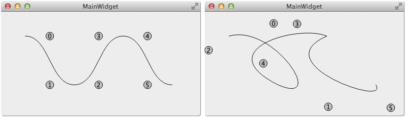

QPainterPath 可以用来画贝塞尔曲线，什么是贝塞尔曲线呢？开始学的时候，经常听到贝塞尔曲线，但一直不知道是什么东西，很神秘的样子，据说很复杂，一直没敢学，人类对陌生的东西总是有恐惧感，这一部分就来揭开贝塞尔曲线神秘的面纱（大部分内容都来自于网络）。
贝塞尔曲线（The Bézier Curves），是一种在计算机图形学中相当重要的参数曲线（3D的称为曲面）。贝塞尔曲线于1962年，由法国工程师皮埃尔·贝塞尔（Pierre Bézier）所发表，他运用贝塞尔曲线来为汽车的主体进行设计。
一般的矢量图形软件通过它来精确画出曲线，贝塞尔曲线由线段与节点组成，节点是可拖动的支点，线段像可伸缩的皮筋，我们在绘图工具上看到的钢笔工具就是来做这种矢量曲线的。贝塞尔曲线是计算机图形学中相当重要的参数曲线，在一些比较成熟的位图软件中也有贝塞尔曲线工具，如PhotoShop等。
贝塞尔曲线还是很抽象的，如果不是看了下面的这些动态图，演示了贝塞尔曲线的生成过程，估计仍然很难明白贝塞尔曲线是什么样的，控制点是什么，有什么用。
塞尔曲线的通用公式为：
看上去是不是很复杂，难以理解？谁都一样，开始时看到这么复杂的公式，都会头大，但是看完下面的一阶，二阶，三阶贝塞尔曲线的方程和生成动画后就明白了，原来大名鼎鼎的贝塞尔曲线也不难嘛。
一阶贝塞尔曲线 就是线段，没有控制点，其参数方程为
二阶贝塞尔曲线 只有一个控制点，为 P1，其参数方程为
把其中的任意一帧拿出来分析，可以看到 MP0/MP1，NP1/Np2，KM/KN 都为 t/(1-t)，是不是一下又明白了很多，其他阶的贝塞尔曲线也是这样的。
三阶贝塞尔曲线 有两个控制点，为 P1, P2，其参数方程为
贝塞尔曲线的更多介绍和动画请参考 http://bbs.csdn.net/topics/390358020 。
绘制二阶贝塞尔曲线使用 quadTo()，第一个参数是控制点，第二个参数是曲线的终点
1 void QPainterPath::quadTo (const QPointF &c, const QPointF &endPoint)
绘制三阶贝塞尔曲线使用 cubicTo()，第一个和第二个参数是控制点，第三个参数是曲线的终点
1 void QPainterPath::cubicTo (const QPointF &c1, const QPointF &c2, const QPointF &endPoint)
或许你会问：为什么只看到了控制点和终点，没有看到起点？这是因为 QPainterPath 默认的起点在 (0, 0)，可以使用 moveTo() 改变起点，前一条线的终点就是下一条线的起点，结束亦是开始，人生亦是如此，生活处处皆道理，留心处处是学问，一花一世界，一叶一菩提，编程亦能悟道。
这里演示一个小程序，QPainterPath 添加了三条贝塞尔曲线，每条曲线有两个控制点，如图显示的 0 到 5 个共 6 个控制点，拖动控制点就会改变它的坐标，然后生成新的贝塞尔曲线并显示出来，实时的看到变化的结果。通过拖动控制点，可以生成各种不同的平滑曲线，这就是贝塞尔曲线的魅力所在。

1 2 3 4 5 6 7 8 9 10 11 12 13 14 15 16 17 18 19 20 21 22 23 24 25 26 27 28 29 30 31 32 33 34 35 36 37 38 39 40 41 42 43 44 45 46 47 48 49 50 51 52 53 54 #ifndef BEZIERCURVEWIDGET_H #define BEZIERCURVEWIDGET_H #include <QWidget> #include <QPointF> #include <QList> #include <QPainterPath> class BezierCurveWidget :public QWidget { Q_OBJECT public : explicit BezierCurveWidget (QWidget *parent = 0 ) ~BezierCurveWidget (); protected : void mousePressEvent (QMouseEvent *event) Q_DECL_OVERRIDE void mouseMoveEvent (QMouseEvent *event) Q_DECL_OVERRIDE void paintEvent (QPaintEvent *event) Q_DECL_OVERRIDE QPainterPath createBezierCurve () ; QRect createControlPointBundingRect (int index) ; QPointF translatedPoint (const QPointF &point) const ; private : QPainterPath bezierCurve; QList<QPointF *> breakPoints; QList<QPointF *> controlPoints; int pressedControlPointIndex; int controlPointRadius; int translatedX; int translatedY; int flags; }; #endif
1 2 3 4 5 6 7 8 9 10 11 12 13 14 15 16 17 18 19 20 21 22 23 24 25 26 27 28 29 30 31 32 33 34 35 36 37 38 39 40 41 42 43 44 45 46 47 48 49 50 51 52 53 54 55 56 57 58 59 60 61 62 63 64 65 66 67 68 69 70 71 72 73 74 75 76 77 78 79 80 81 82 83 84 85 86 87 88 89 90 91 92 93 94 95 96 97 98 99 100 101 102 103 104 #include "BezierCurveWidget.h" #include <QPainter> #include <QMouseEvent> BezierCurveWidget::BezierCurveWidget (QWidget *parent) : QWidget (parent) { breakPoints.append (new QPointF (0 , 0 )); breakPoints.append (new QPointF (100 , 100 )); breakPoints.append (new QPointF (200 , 0 )); breakPoints.append (new QPointF (300 , 100 )); controlPoints.append (new QPointF (50 , 0 )); controlPoints.append (new QPointF (50 , 100 )); controlPoints.append (new QPointF (150 , 100 )); controlPoints.append (new QPointF (150 , 0 )); controlPoints.append (new QPointF (250 , 0 )); controlPoints.append (new QPointF (250 , 100 )); bezierCurve = createBezierCurve (); controlPointRadius = 8 ; translatedX = 50 ; translatedY = 50 ; flags = Qt::AlignHCenter | Qt::AlignVCenter; } BezierCurveWidget::~BezierCurveWidget () { qDeleteAll (breakPoints); qDeleteAll (controlPoints); } void BezierCurveWidget::mousePressEvent (QMouseEvent *event) pressedControlPointIndex = -1 ; QPointF p = translatedPoint (event->pos ()); for (int i = 0 ; i < controlPoints.size (); ++i) { QPainterPath path; path.addEllipse (*controlPoints.at (i), controlPointRadius, controlPointRadius); if (path.contains (p)) { pressedControlPointIndex = i; break ; } } } void BezierCurveWidget::mouseMoveEvent (QMouseEvent *event) if (pressedControlPointIndex != -1 ) { QPointF p = translatedPoint (event->pos ()); controlPoints.at (pressedControlPointIndex)->setX (p.x ()); controlPoints.at (pressedControlPointIndex)->setY (p.y ()); bezierCurve = createBezierCurve (); update (); } } QPainterPath BezierCurveWidget::createBezierCurve () { QPainterPath curve; curve.moveTo (*breakPoints.at (0 )); curve.cubicTo (*controlPoints[0 ], *controlPoints[1 ], *breakPoints[1 ]); curve.cubicTo (*controlPoints[2 ], *controlPoints[3 ], *breakPoints[2 ]); curve.cubicTo (*controlPoints[4 ], *controlPoints[5 ], *breakPoints[3 ]); return curve; } QRect BezierCurveWidget::createControlPointBundingRect (int index) { int x = controlPoints.at (index)->x () - controlPointRadius; int y = controlPoints.at (index)->y () - controlPointRadius; return QRect (x, y, controlPointRadius * 2 , controlPointRadius * 2 ); } QPointF BezierCurveWidget::translatedPoint (const QPointF &point) const { return point - QPointF (translatedX, translatedY); } void BezierCurveWidget::paintEvent (QPaintEvent *) QPainter painter (this ) ; painter.setRenderHint (QPainter::Antialiasing); painter.translate (translatedX, translatedY); painter.drawPath (bezierCurve); painter.setBrush (Qt::lightGray); for (int i = 0 ; i < controlPoints.size (); ++i) { QRect rect = createControlPointBundingRect (i); painter.drawEllipse (rect); painter.drawText (rect, flags, QString ("%1" ).arg (i)); } }
1 2 3 4 5 6 7 8 9 10 #include "BezierCurveWidget.h" #include <QApplication> int main (int argc, char *argv[]) QApplication a (argc, argv) ; BezierCurveWidget w; w.show (); return a.exec (); }
这个程序不能像拖动控制点那样拖动曲线的端点改变贝塞尔曲线，这就作为留给大家的作业吧。